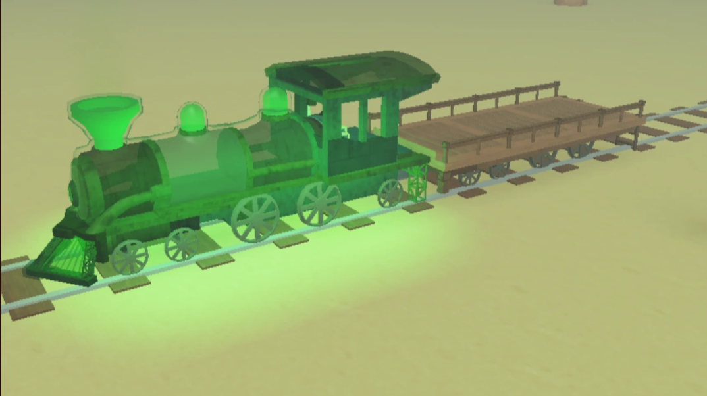

Dead Rails: where trains go off the rails... literally 💀
You hop in thinking it's just another chill ride. 30 seconds later? You're sprinting from a shadow demon while your flashlight dies. GG.
In dumbed-down monkey terms:
Get on spooky train. Try not to die. That’s it. That’s the game.
It’s a Roblox horror game that somehow feels TOO good. The lights start flickering, voices whisper, and your “teammates” start disappearing. You’ll be walking solo real quick, trust.
What's the Vibe?
• Starts normal.
• Lights cut off.
• Some kid screams in chat.
• Doors start slamming.
• You see a THING crawling at you.
• You die. No revive. No hugs. Just back to lobby, lil bro.
There's lore and all that if you're into reading stuff mid-panic, but most of y’all gonna ignore that and scream anyway.
Why It's Fire (and lowkey pain):
✅ Atmosphere: Legit spooky, not that dollar store horror
✅ Audio: Nah the sound design got no business being this clean
✅ Replayable: Different train, new trauma every time
❌ Monsters: Some of y’all finna alt+F4 when it crawls
Is it actually scary?
Yup. Especially with headphones.
You WILL jump. You WILL scream.
And if you're playing with friends? One of y’all def gonna abandon the group like a coward.
Final warning:
Don't trust the calm. If it’s quiet, you're next.
Stay moving. Don’t look back.
And if you do... lmk how the void looks, lil bro 😭
Real Talk: is pay2win YUH uh U CAN LITTERLY BUT SOME WEIRD AHH POWER BUY DIFFERENT VEHICLES THAT BECOME GHOST OR SMH U CAN BUY COALS AND GUNS SO U DONT NEED A STOP IN THEY WAY U CAN BOOM UR WAY TO WIN
sorry if i went too unformal